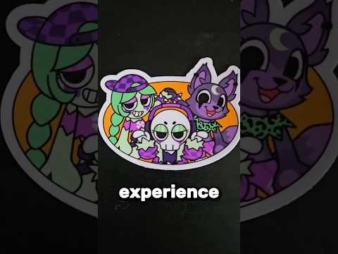

Dandy's World duce Halloween-ul în viața reală

Clapsy are ~257K și crește cu ~36K/h, cu un Halloween IRL în decor real. Ideea VEXU: Halloween-ul din joc, dar în camera lui Andrei, apoi tăietură direct în gameplay. TikTok, de căutat: „dandys world halloween irl”.